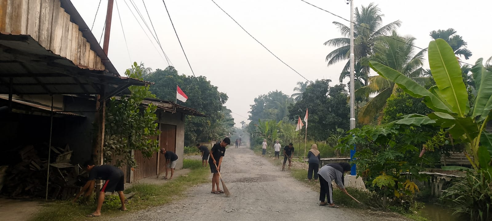
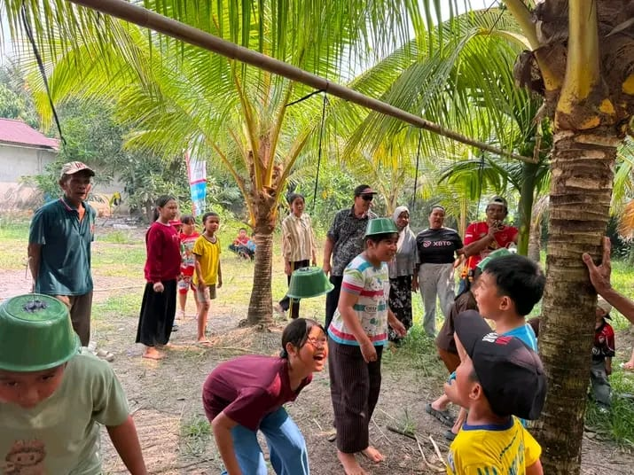
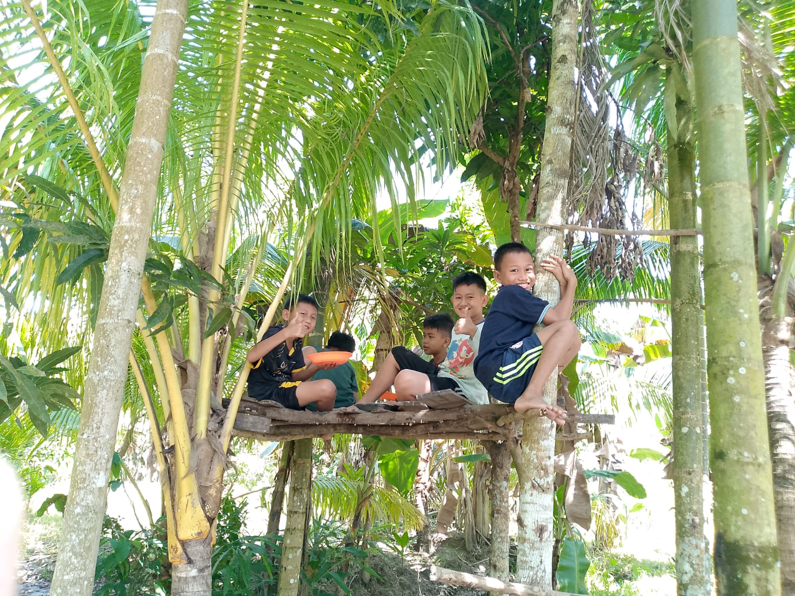

Kegiatan Masyarakat
Semangat kebersamaan dan gotong royong warga Desa Serunai.

🤝 Kerja Bakti
Kegiatan gotong royong warga untuk menjaga kebersihan dan lingkungan desa.

Kebersamaan Warga
Momen berkumpul dan berinteraksi bersama masyarakat.

🌿 Kegiatan Bersama
Kebersamaan masyarakat dalam berbagai kegiatan desa.

😊 Momen Warga
Momen sederhana yang menunjukkan keakraban masyarakat.